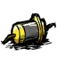

全自动灌溉水桶 拥有两种模式
分别为手持模式 与 工作模式玩家可以通过右键地上的 全自动灌溉水桶 切换
手持模式 下全自动灌溉水桶无任何作用，但是可以拾起放进角色物品栏当中
玩家可以通过从物品栏中将 全自动灌溉水桶 移出后直接右键想要放置的位置，或者右键地上的 全自动灌溉水桶 将其激活至工作模式
工作模式 下的全自动灌溉水桶需要消耗耐久，刚制造时的全自动灌溉水桶耐久次数为0
玩家可以通过在地图上生成的 池塘 为全自动灌溉水桶 恢复全部耐久
工作模式 下全自动灌溉水桶每30秒就会检测半径20单位距离的耕地地块当中的水分
若检测到水分小于50单位，则消耗一次耐久进行灌溉，为检测到的耕地地块添加50单位水分（单个耕地地块水分上限为100单位）

动画展示
全自动灌溉水桶
制作配方
3+2 
解锁：
耐久次数：160
堆叠上限：不可堆叠
不可燃烧
漂浮：是
物品id：momoi_wateringcan